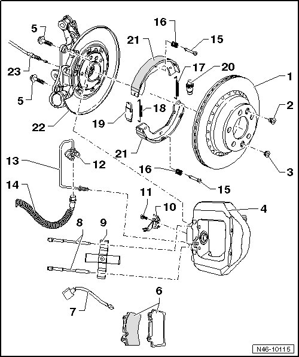

17" (1KQ) Caliper
Rear Brake Assembly Overview
Installation date: from calendar week 22/06
• After replacing brake pads, press brake pedal firmly several times with vehicle stationary so that the brake pads are properly seated in their normal operating position.
• Use brake charger/bleeder unit (VAS 5234) or extraction device (VAG 1869/4) to extract brake fluid from brake fluid reservoir.
• Before removing brake caliper or disconnecting brake line, brake pedal actuator (VAG 1869/2) must be inserted (this dissipates pressure).

1 Brake disc/brake drum
• Internally ventilated brake disc: 330 mm diameter.
• Brake disc thickness: 28 mm.
• Wear limit: 26 mm.
• Brake drum: 210 mm diameter.
• Wear limit: 211 mm.
• Must always be replaced together on both sides of axle.
• To remove, first remove brake caliper, do not remove brake line.
2 Bolt, 14 Nm
• Brake disc to wheel hub.
3 Bolt, 14 Nm
• For adjustment nut of parking brake.
4 Brake caliper
• Do not remove brake line when replacing brake disc.
• Removing and installing, refer to --> [ Brake Caliper ] Brake Caliper.
• Servicing, refer to --> [ Brake Caliper Assembly Overview ] Brake Caliper Assembly Overview.
5 Bolt, 180 Nm
• Always replace after removal.
6 Brake pads
• Thickness 11 mm without backing plate.
• Wear limit: 2 mm without backing plate.
• With wear indicator.
• When wear limit is reached (limit: approximately 4 mm), the warning lamp lights up in instrument cluster.
• Checking thickness.
• Must always be replaced together on both sides of axle.
• Removing and installing, refer to --> [ Brake Pads ] Brake Pads.
7 Wire for brake pad wear indicator
8 Pad retaining pin
9 Retaining spring
10 Bracket
• fasten to brake caliper housing
11 Bolt, 8 Nm
12 Spring clamp
13 Brake line, 14 Nm
• Do not remove brake line when replacing brake disc.
14 Brake hose
• Do not remove brake hose when replacing brake disc.
• Make sure that lugs are properly seated in grooves in bracket.
15 Spring dowel sleeve
16 Compression spring
17 Pull spring
• Component location: At adjustment nut.
• Distinguishing characteristics compared to pull spring --> [ (Item 18) Pull spring ] :
• Larger number of spring coil
• Can be easily bent by hand
18 Pull spring
• Component location: At spreader.
• Distinguishing characteristics compared to pull-spring --> [ (Item 17) Pull spring ] :
• Smaller number of spring coil
• Cannot be easily bent by hand
19 Spreader
20 Adjustment nut
• Adjust parking brake, refer to --> [ Park Brake Adjusting ] Procedures.
21 Brake shoe
• Removing and installing, refer to --> [ Brake Shoes ] Brake Shoes.
• Minimum pad thickness 1 mm.
• Checking thickness.
22 Brake carrier
23 Rear brake cable